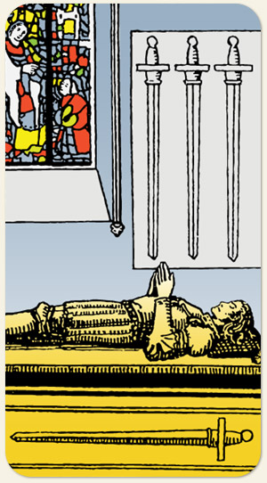

O Naipe de Espadas quer liberdade mas Quatro quer a rotina. Ou seja, não é um casamento perfeito. Representa silêncio, lugares de silêncio, oração, meditação, necessidade de organizar, de estabelecer estratégia, afiar a lâmina da espada, pausa no combate.
Positivo: O repouso do guerreiro, parar para pensar, se impor, inspirar-se, concentrar-se.
Negativo: Ar viciado, ambiente mofado, ar contaminado, cheio de vícios e das mesmas ideias, limitação, apatia, marasmo, não ser capaz de se ouvir, falta de concentração, indiferença, muito pensamento e pouca ação, pensamento arcaico, silêncio inadequado, omissão, falta de resultados.
Símbolos: Efígie do Cavaleiro, Espada sob o Cavaleiro, Vitral Colorido, Tumba, Mãos Unidas.
Cores: Cor, Cor, Cor, Cor.